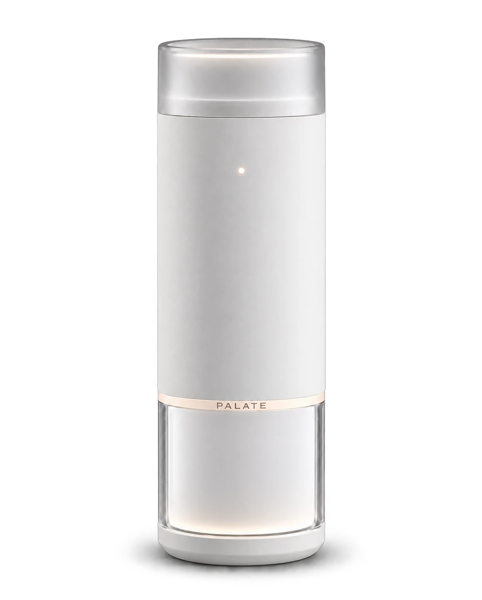
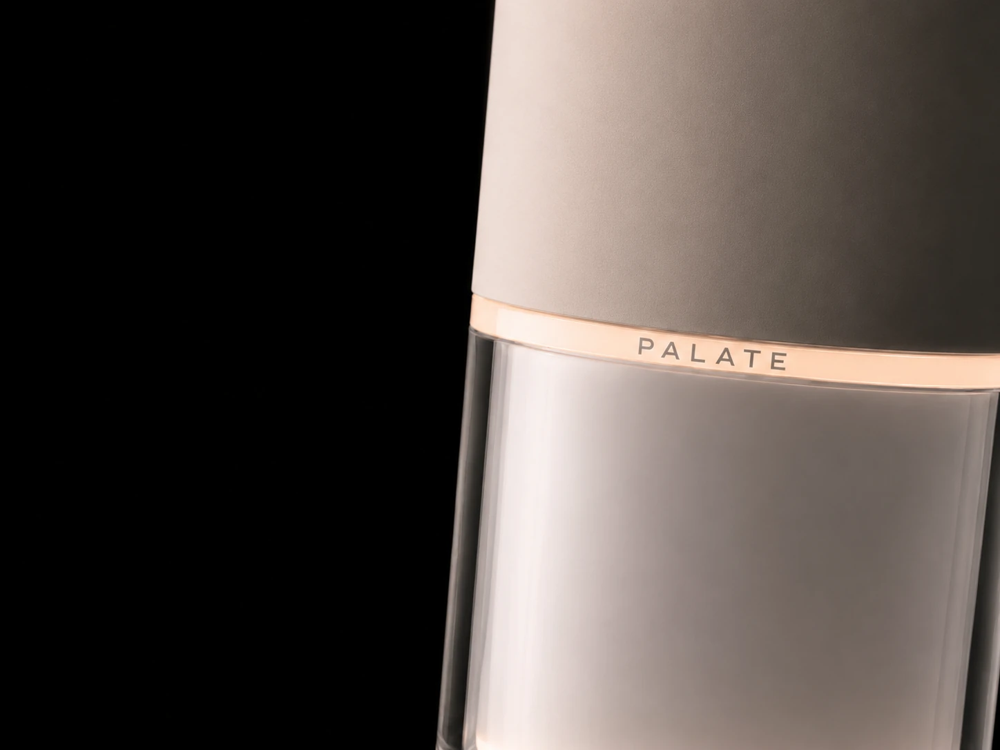
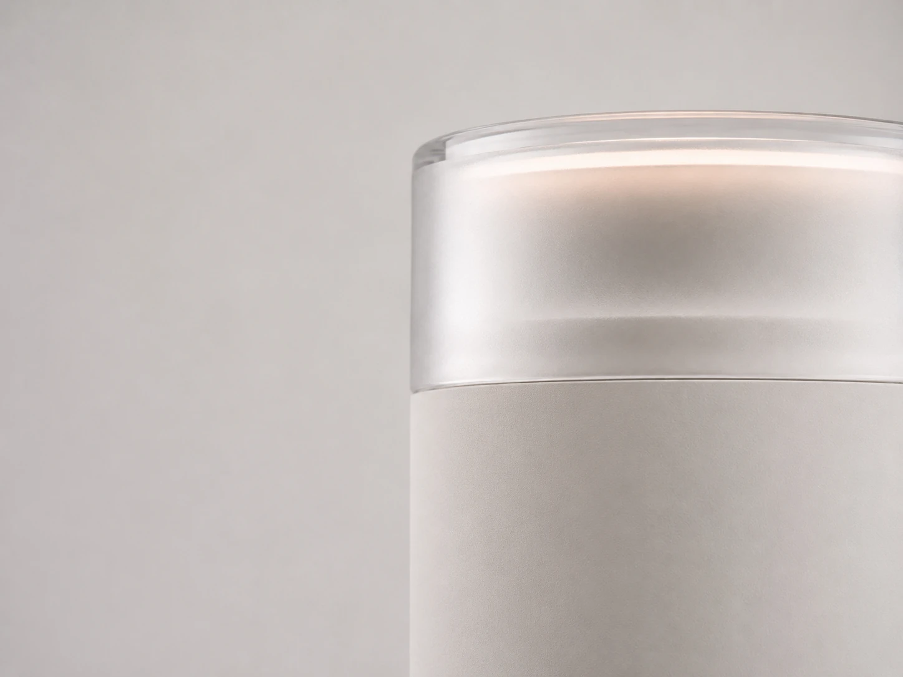
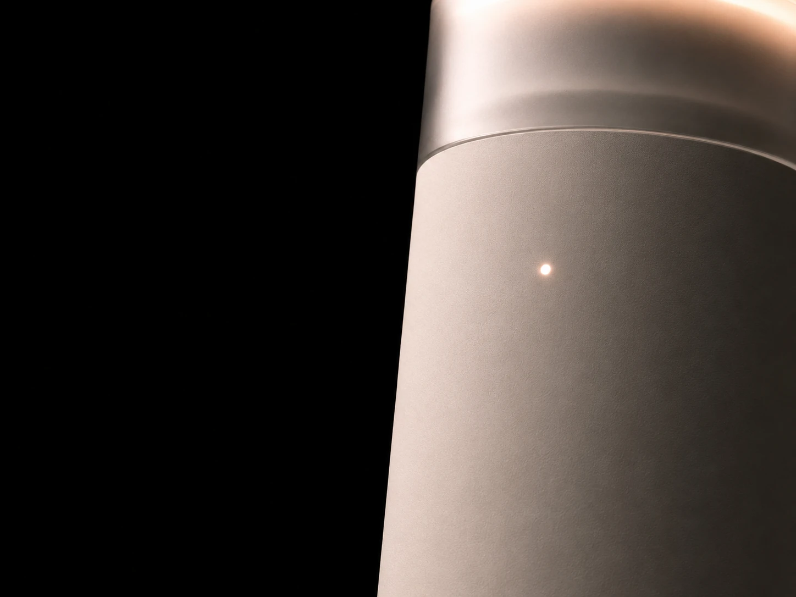
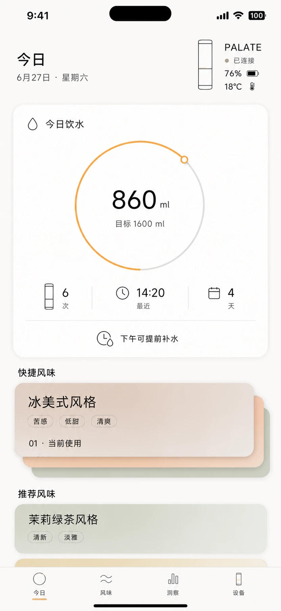
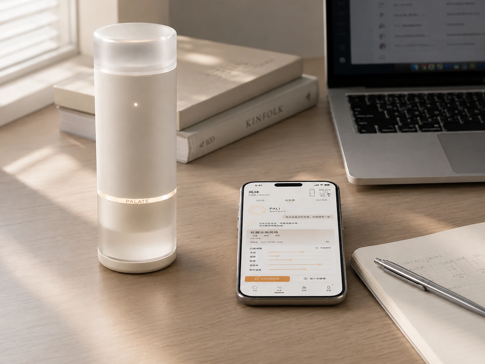
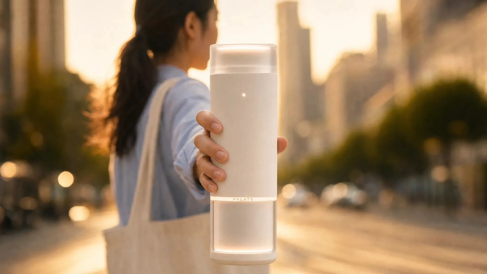
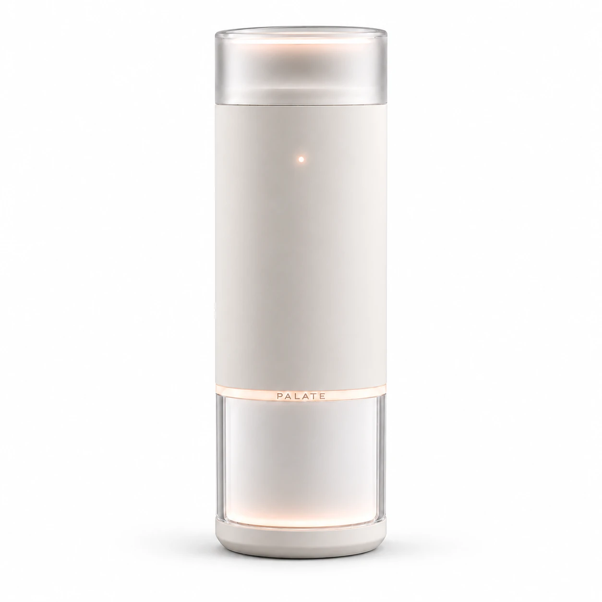

国家金奖作品

一杯水。更多可能。
YOUR WATER.YOUR WAY.
少一点打扰。
多一点感知。
PALATE 探索风味感知与日常饮水的另一种关系。
水，还是水；不同的，是你感知它的方式。



让光，成为回应。
一圈柔和的光，把状态变成直觉。
你的下一口灵感。
清新，柔和，或者醇厚。
让风味，更接近此刻的你。
你说的，
PALI 听得懂。
把偏好说出来，让风味有迹可循。
PALI，是 PALATE 的 AI 风味助手设计概念。

p.
PALI风味灵感助手
本地预设演示从你的偏好开始。
选择一条灵感，或输入青柠、莓果、咖啡、纯水。
青柠清新风味画像 / 示意
随偏好与强度变化 · 非实测数据
当前通过本地关键词预设展示交互思路，未接入 AI 服务、App 或实体设备。
你的偏好，自成一种风味。
日常，也值得期待。
从桌前的片刻，到走出去的时光。
把属于你的风味，带进生活。


留一点空白，给自己。
工作间隙，从一口水重新开始。
每一面，
都恰如其分。
柔和轮廓，细腻磨砂。
一只日常水杯，对体验的重新思考。
- 高度
- 230 mm
- 直径
- 67 mm
触感
细腻磨砂，柔和轮廓。
光语
一圈光，让状态直觉可见。
层次
通透储水舱，与光自然相遇。
尺寸依据项目展板。现有六视图为概念图片。
正面触控光点与环形反馈，一眼可见。

下一口，
从你的偏好开始。
让一杯水，拥有更多选择。
探索 PALATE工业设计概念 · 尚未商业发售